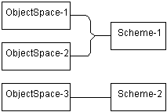
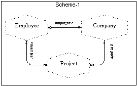
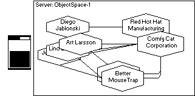

Previous TOC Next
Previous TOC Next 
| ChiMu Documentation Object-Relational Mapping | Previous TOC Next |
| ObjectSpaces | Client-Server ObjectSpaces | Concurrency and Conflicts | Summary |
Object-relational mapping intrinsically brings in client-server issues because a relational server is separated from the client application. The client-server issues are nonetheless independent of relational mapping. This conveniently divides the problems into more manageable pieces. This chapter will discuss client-server issues solely in terms of objects. The next chapter can then focus on the specifics of relational mapping.
The problems when dealing with client-server objects is to be able to manage the identity and state of objects on each of the client and the server, and then handle the relationships between the two systems’ objects. This is different from the relational approach where everything is just a value. The client is only getting a simple snapshot of the server state and then must state explicitly how it wants to change it. The object model tries to provide a more transparent interface for the client, but this actually causes a more complex model and a more sophisticated framework.
|
To help describe these independent states we will define the term ObjectSpace. An ObjectSpace is a closed collection of objects based on a single (possibly very large) scheme. An ObjectSpace is self-contained and isolated from other ObjectSpaces: two ObjectSpaces can be based on the same scheme but they have no references to each other and changes to either ObjectSpaces’s state will not impact the other. |
 |
Scheme-1 shows a scheme for a simple business model. ObjectSpace-1 shows one complete state of a business model: it represents the model of interest to Purrfect Analysis. ObjectSpace-2 shows a second, independent, but also complete state of the same scheme. ObjectSpace-1 and ObjectSpace-2 are completely independent even though they have compatible (actually equivalent) models.

ObjectSpaces are by default unrelated. A simple application could "load" all the objects from one ObjectSpace, modify them, and then save them back (similar to working with a document). At the same time a different application could work with a different ObjectSpace. Neither application would have an impact on the other.
Client-Server applications can not work this way. The basic model for client-server applications is a single central server with multiple clients that can connect to that server. The ObjectSpaces for these different applications are not independent, but are instead interlinked by the state of the server’s ObjectSpace.
|
For client-server applications the "true" ObjectSpace is located on the Server. This is where the one true state of the business model is kept for everyone to see and modify. If each client connected to the server’s ObjectSpace (locking out all other clients for that time period) and made changes we would again return to the simple, single ObjectSpace model. Unfortunately this would prevent any type of concurrency among different users of the application. Instead each client will also have its own ObjectSpace that is replicated from the servers true ObjectSpace. |
 |
A Proxy is an object that stands in for another object (the RealSubject) and manages the client interaction with the RealSubject. A proxy pretends to be the RealSubjectto make life easy on the client: a client does not need to consider all the issues involved with talking to the RealSubjectwhich may be on a different machine or could change in different contexts. A Replicate is a Proxy which holds local state and performs local operations which are later propagated to the RealSubject. This is as opposed to a Forwarder, which holds no local state and which immediately propagates all operations to the RealSubject.
Proxies must be able to find and pretend to be their RealSubject. This causes a Proxy to have two identities: their local identity and their "real" (pretend) identity. The RealSubject must have some type of IdentityKey, a value that uniquely identitifies the RealSubject for its proxies. Each proxy can then hold onto the RealSubject’s IdentityKey for later use in finding and interacting with the RealSubject.
Each client has its own ObjectSpace but this is only a temporary working-copy of the server’s true ObjectSpace. Each object in a client’s ObjectSpace is a replicate of a server object, and the whole client ObjectSpace forms a partial or complete replicate of the server’s ObjectSpace.
If each client deals with a non-intersecting subset of the servers ObjectSpace then we can have easy and "perfect" concurrency: clients can cause changes to their ObjectSpace replicates and propogate these to the server without worry about a conflict with another client. For our example, changes to "Diego Jablonski" will not conflict with changes to "Lino Buchanan".
For most applications it is very unlikely that clients will always using non-intersecting subsets. For the cases where the ObjectSpaces on clients overlap there must be some type of concurrency control between the clients and the server. Concurrency controls can vary on granularity, visibility, pessimism, functional dependency, and many other axes. There are too many variations of concurrency control to be discussed here, but I will include a couple examples.
A client can "check-out" a collection of objects from the server and no other client can see these objects until they are checked back in. For our example, client-1 can check-out Comfy Cat and all its employees and projects. Then client-2 could work with "Red Hot Hat" but not do anything with Comfy Cat. This automatically causes each client to have non-intersecting subsets.
A client can either read "check-out" or write "check-out" objects from the server. Two clients can check-out the same object as long as they are not both trying to write to it. Alternatively we can prevent dirty-reads as well: a client can only check out an object if there are no write-locks on it and can only write-lock an object if no other client has checked it out.
A client can replicate any object from the server but will only be able to write changes back to the server if the server object has not changed since the client produced the replicate. This is the standard optimistic locking.
Because relational mapping intrinsically involves a client-server system we need to be able to handle the issues with that system. Most of the issues have nothing to do with relational mapping but are instead involved with having multiple ObjectSpaces between a Server and its Client applications. We need to recognize that the client objects are Replicates of the server objects, that they must keep track of the IdentityKey of their server object, and that there are many issues and approaches for handling concurrency between the multiple clients.
 |
Previous TOC Next | |
| Copyright (c) 1997, ChiMu Corporation. All Rights Reserved.
Confidential and Proprietary. Version R1.0.1. |